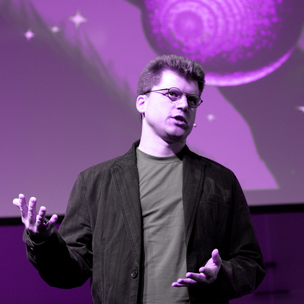
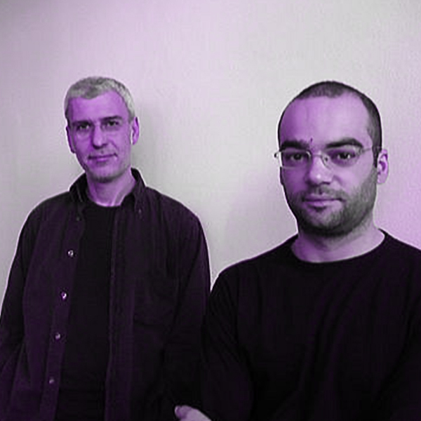
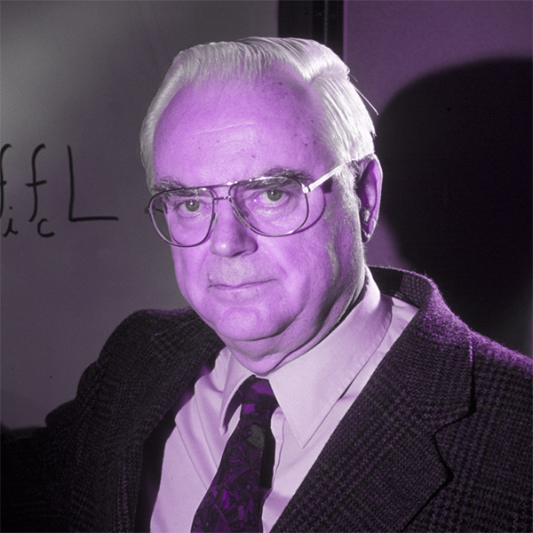

UNIVERSO
TALKS
Giovedì 14 marzo 2019 18:00
BUCHI NERI
con Bill Nye
La caratteristica distintiva di un buco nero è la comparsa di un orizzonte degli eventi: un confine spazio-temporale attraverso il quale una qualsiasi particella di materia o una qualsiasi onda, compresa la luce, può passare solo verso l'interno del buco nero. Nulla, nemmeno la luce, può sfuggire dall'orizzonte degli eventi. L'orizzonte degli eventi è indicato come tale perché, se un evento si verifica entro i suoi confini, le informazioni di tale evento non possono raggiungere un osservatore esterno rendendo impossibile determinare se si sia effettivamente verificato.[29] Come predetto dalla relatività generale, la presenza di una massa deforma lo spazio-tempo in modo tale che i percorsi seguiti dalle particelle piegano verso la massa del buco.[30] All'orizzonte degli eventi di un buco nero questa deformazione diventa così forte che non esistono percorsi per sfuggire al buco nero.
giovedì 21 marzo 2019 18:00
SPAZIO TEMPO
con Carlo Rovelli
Con l'accettazione da parte della comunità scientifica della teoria della relatività è stato demolito il concetto di spazio e di tempo assoluti e separati l'uno dall'altro, mentre ha preso il suo posto il concetto di spaziotempo, nel quale non c'è un sistema di riferimento privilegiato e per ogni evento le coordinate spaziali e temporali sono legate tra di loro in funzione dello spostamento relativo dell'osservatore. Con l'assenza di un tempo assoluto, anche il concetto di contemporaneità è stato modificato dall'avvento della relatività: si può definire al suo posto l'altrove assoluto, cioè l'insieme degli eventi che non appartengono né al futuro né al passato, al di fuori cioè del cono di luce.
VISUAL
ART
QUASAR
Quayola
Un quasar (contrazione di QUASi-stellAR radio source, cioè "radiosorgente quasi stellare") è un nucleo galattico attivo estremamente luminoso e generalmente molto distante dalla Terra (dell'ordine dei miliardi di anni luce). Il nome deriva dal fatto che questi oggetti, la cui natura è stata controversa fino ai primi anni ottanta, furono inizialmente scoperti come potenti sorgenti radio, la cui controparte ottica risultava puntiforme come una stella. Il grande spostamento verso il rosso che caratterizza i quasar, in accordo con la legge di Hubble, implica che siano oggetti molto distanti e che quindi debbano emettere energia equivalente a centinaia di normali galassie. Si ritiene comunemente che tale grande luminosità sia originata dall'attrito causato da gas e polveri che cadono in un buco nero supermassiccio; essi formano un disco di accrescimento, che converte circa la metà della massa di un oggetto in energia. Il termine QUASAR è stato coniato nel 1964 dall'astrofisico Hong-Yee Chiu.

DATA
BIG BANG
Onedotzero
Secondo il modello del Big Bang, l'universo si espanse da uno stato iniziale estremamente denso e caldo e continua ad espandersi oggi. Una comune analogia spiega che lo spazio stesso si sta espandendo, portando le galassie con sé, come l'uvetta in un panettone che lievita. Questa immagine è una rappresentazione artistica che illustra l'espansione di una porzione di un universo piatto. Il Big Bang è un modello cosmologico basato sull'idea che l'universo iniziò a espandersi a velocità elevatissima in un tempo finito nel passato a partire da una condizione di curvatura, temperatura e densità estreme e che questo processo continui tuttora.

SUPERAMMASSO
TALKS
Giovedì 28 Marzo 2019 18:00
GRUPPO DI M81
con Martin Bojowald
Il Gruppo di M81 (o Gruppo di NGC 3031) è un gruppo di galassie, situato nelle costellazioni dell'Orsa Maggiore e della Giraffa, che comprende le galassie M81 o Galassia di Bode e la M82 o Galassia Sigaro, insieme a diverse altre galassie piuttosto luminose. Il centro del gruppo si trova approssimativamente alla distanza di 3,6 milioni di parsec dalla Terra e pertanto è uno dei gruppi più vicini al nostro Gruppo Locale.
Giovedì 4 Aprile 2019 18:00
DINAMICHE
con Michio Kaku
Dalla fine degli anni ottanta è risultato chiaro che non solo il Gruppo Locale, ma tutta la materia fino alla distanza di almeno 50 Mpc è soggetta ad uno spostamento in blocco a velocità dell'ordine di 600 km/s nella direzione dell'Ammasso del Regolo (Abell 3627). Lynden-Bell ed altri autori (1988) hanno dato a questa causa il nome di Grande Attrattore. Se da un lato gli astronomi si sentono abbastanza sicuri per quanto riguarda la velocità del Superammasso Locale, che è stata misurata in confronto alla Radiazione cosmica di fondo, la natura di ciò che lo sta provocando non è ancora ben compresa.
VISUAL
ART
AMMASSO DELLA VERGINE
Evelina Domnitch & Dmitry Gelfand
L'Ammasso della Vergine è il più vicino ricco ammasso di galassie. Con una distanza di "soli" 60 milioni di anni luce, molte delle sue galassie sono visibili con piccoli telescopi. Si tratta di un tipico ricco ammasso di galassie, con circa 1500 membri. La sua grande massa è causa delle grandi velocità peculiari di molte delle sue galassie, a volte fino a 1.600 km/s (rispetto al centro dell'ammasso). Per confronto, lo spostamento verso il rosso dell'ammasso corrisponde ad una velocità di soli 1.100 km/s.
DATA
GRANDE ATTRATTORE
Limiteazero
In astronomia, il Grande Attrattore è un ammasso di galassie che si trova in corrispondenza del centro gravitazionale di Laniakea, il superammasso locale a cui appartiene anche la Via Lattea. La forza gravitazionale esercitata dal Grande Attrattore influenza il moto di circa 100.000 galassie (inclusa la Via Lattea) contenute all'interno di una regione grande centinaia di milioni di anni luce. Le galassie contenute nel Grande Attrattore sono tutte spostate verso il rosso in accordo con la Legge di Hubble, come se si stessero allontanando da noi e ognuna dall'altra. Ma ognuna mostra, sovrapposto a questo spostamento, un moto generale sufficiente a rivelare all'interno dell'Attrattore una concentrazione di massa equivalente a decine di migliaia di galassie.
GRUPPO LOCALE
TALKS
Giovedì 11 Aprile 2019 18:00
GALASSIA DEL TRIANGOLO
con Neil deGrasse Tyson
La Galassia del Triangolo, conosciuta anche con il nome di M33 (oggetto numero 33 del catalogo di Charles Messier) e di NGC 598, è una galassia a spirale di tipo SA(s)cd distante circa 3 milioni di anni luce dalla Terra e situata nella costellazione del Triangolo. Nel mondo anglosassone M33 è anche informalmente chiamata Pinwheel Galaxy (in italiano letteralmente Galassia Girandola) in alcune pubblicazioni amatoriali di astronomia, ma anche in alcuni comunicati ufficiali di siti professionali. Tuttavia sia il database astronomico SIMBAD, che contiene i nomi e le designazioni formali di vari oggetti astronomici, che diversi altri siti per l'astronomia amatoriale indicano con il nome di "Pinwheel Galaxy" la galassia M101.
Giovedì 18 Aprile 2019 18:00
ORSA MINORE
con Frank Drake
L'Orsa Minore è individuabile con facilità, sia perché le sue stelle più brillanti sono di seconda magnitudine, sia perché, una volta individuato il Grande Carro, si può raggiungere la Stella Polare, la stella più luminosa dell'Orsa Minore, utilizzando le due stelle più occidentali dell'asterismo dello stesso Grande Carro. Dall'emisfero boreale è una costellazione circumpolare, ossia non tramonta mai, restando visibile in ogni periodo dell'anno; dall'emisfero australe invece è sempre invisibile, tranne che in prossimità dell'equatore (eccetto la Stella Polare).
VISUAL
ART
NUBE DI SMITH
Ryoji Ikeda
Una nube di gas scoperta da Gail Smith negli anni Sessanta nello spettro radio, attraverso le emissioni di idrogeno e per questo chiamata Nube di Smith. Per anni ci si è interrogati sulla natura: una galassia satellite che ha la peggio rispetto alla nostra oppure un grumo di gas come ce ne dovrebbero esser molti, ma stavolta tanto vicino da poter essere osservato in maniera abbastanza dettagliata. Se la nube fosse originaria delle zone intergalattiche, la sua composizione sarebbe data prevalentemente da idrogeno e elio e invece, a sorpresa, è risultata una quantità di zolfo del tutto simile a quella del disco galattico. La Nube di Smith, in pratica, sembra esser stata espulsa dalla Via Lattea circa 70 milioni di anni fa e si appresta a un grande rientro entro 30 milioni di anni.
DATA
GALASSIA DEL DRAGO
Density Design
Quella del Dragone è una delle costellazioni più grandi della volta celeste; si presenta completamente circumpolare fino alle latitudini temperate boreali, come le regioni del bacino del Mediterraneo. Il gruppo della testa è rappresentato da quattro stelle, le più luminose delle quali sono chiamate Eltanin e Rastaban: la prima possiede una grande importanza storica, poiché fu misurando la parallasse di questa stella che James Bradley scoprì nel 1725 il fenomeno dell'aberrazione della luce, che costituisce una delle prime prove della rotazione della Terra attorno al Sole. Il resto della costellazione si snoda attorno al polo nord celeste, insinuandosi fra l'Orsa Maggiore e l'Orsa Minore, circondando quest'ultima sui lati est, sud ed ovest; le stelle del Dragone al di fuori del quadrilatero della testa sono per lo più di terza e quarta magnitudine, organizzate in allineamenti.
VIA LATTEA
TALKS
Giovedì 25 Aprile 2019 18:00
ORIONE
con Piero Angela
Orione o il Cacciatore (in latino Orion) è un'importante costellazione, forse la più conosciuta del cielo, grazie alle sue stelle brillanti e alla sua posizione vicino all'equatore celeste, che la rende visibile dalla maggior parte del pianeta. La costellazione consta di circa 130 stelle visibili a occhio nudo ed è identificabile dall'allineamento di tre stelle che formano la Cintura di Orione, incorniciate da un rettangolo di quattro stelle più luminose; le tre stelle della Cintura sono chiamate in diversi modi a seconda della tradizione: i Tre Re, i Re Magi (secondo una tradizione contadina dell'Italia centro-settentrionale), il rastrello, i tre mercanti, i bastoni. La sagoma dell'eroe è invece delineata da nove stelle.
Giovedì 2 Maggio 2019 18:00
ANDROMEDA
con Patrizia Caraveo
La Galassia di Andromeda è la più grande del Gruppo Locale, un gruppo di galassie formato dalla Via Lattea, Andromeda e dalla Galassia del Triangolo, più circa cinquanta altre galassie minori, molte delle quali satelliti delle principali. Sebbene sia la più estesa, sembra che non sia la più massiccia, poiché alcuni studi suggeriscono che la Via Lattea contenga più materia oscura e potrebbe così essere quella con la massa più grande del gruppo. Secondo gli studi pubblicati negli anni duemila, derivati dalle osservazioni del telescopio spaziale Spitzer, la Galassia di Andromeda conterrebbe circa un bilione di stelle (mille miliardi), un numero di gran lunga superiore rispetto a quello della nostra galassia;[8] sulla massa e sul numero di stelle ci sono tuttavia opinioni discordanti: alcuni studi indicano un valore di massa per la Via Lattea pari all'80% di quello di Andromeda, mentre secondo altri studi le due galassie avrebbero delle dimensioni simili fra loro.
VISUAL
ART
SAGITTARIO
Tomas Saraceno
Il Sagittario (in latino Sagittarius, abbreviato in Sgr) è una costellazione dello zodiaco, comunemente raffigurato come un centauro tendente un arco; si trova tra lo Scorpione ad ovest e il Capricorno ad est e contiene al suo interno il centro galattico e un gran numero di oggetti galattici.La costellazione contiene al suo interno il centro galattico e infatti la scia della Via Lattea è qui particolarmente luminosa; è possibile distinguere due regioni principali: la Grande Nube del Sagittario, che occupa gran parte del settore più occidentale della costellazione sul confine con l'Ofiuco e lo Scorpione, e la Piccola Nube del Sagittario, coincidente con l'oggetto M24.
DATA
BRACCI DI SPIRALE
Sebastian Sadowski
Può sembrare assurdo, ma i bracci di spirale non sono altro che delle enormi onde sonore che si propagano in modo indipendente dalla materia sul disco delle galassie a spirale. In linguaggio più tecnico si definiscono onde di densità, ma il principio fisico alla base della loro formazione è identico a quello che ci consente di sentire il suono qui sulla Terra, con una piccola differenza: stiamo infatti osservando dei mostri estesi per decine di migliaia di anni luce, quindi anche le onde sonore che si sviluppano sono mostri con una lunghezza d’onda di altrettante migliaia di anni luce. Di fatto, è impossibile per qualsiasi apparato percepire il suono associato a queste speciali onde sonore, ma questo non rende di certo meno valida la loro esistenza.
SISTEMA SOLARE
TALKS
Giovedì 9 maggio 2019 18:00
LA TERRA
con Samantha Cristoforetti
La Terra è il terzo pianeta in ordine di distanza dal Sole e il più grande dei pianeti terrestri del sistema solare, sia per massa sia per diametro. È il luogo primigenio degli esseri umani e nel quale vivono tutte le specie viventi conosciute, l'unico corpo planetario del sistema solare adatto a sostenere la vita come da noi concepita e conosciuta. Sulla sua superficie, si trova acqua in tutti e tre gli stati (solido, liquido e gassoso) e un'atmosfera composta in prevalenza d'azoto e ossigeno che, insieme al campo magnetico che avvolge il pianeta, protegge la Terra dai raggi cosmici e dalle radiazioni solari.
giovedì 16 maggio 2019 18:00
ASTEROIDI
con Alan Fitzsimmons
Un asteroide è un piccolo corpo celeste simile per composizione ad un pianeta terrestre e generalmente privo di una forma sferica; ha in genere un diametro inferiore al chilometro, anche se non mancano corpi di grandi dimensioni, giacché tecnicamente anche i corpi particolarmente massicci recentemente scoperti nel Sistema solare esterno sono da considerarsi asteroidi. Si pensa che gli asteroidi siano residui del disco protoplanetario che non sono stati incorporati nei pianeti, durante la formazione del Sistema. La maggior parte degli asteroidi si trova nella fascia principale, e alcuni hanno degli asteroidi satelliti. Hanno spesso orbite caratterizzate da un'elevata eccentricità.
VISUAL
ART
MARTE
ANF
Marte è il quarto pianeta del sistema solare in ordine di distanza dal Sole, è visibile ad occhio nudo ed è l'ultimo dei pianeti di tipo terrestre dopo Mercurio, Venere e la Terra. Chiamato il Pianeta rosso a causa del suo colore caratteristico dovuto alle grandi quantità di ossido di ferro che lo ricoprono[3], Marte prende il nome dall'omonima divinità della mitologia romana e il suo simbolo astronomico è la rappresentazione stilizzata dello scudo e della lancia del dio
DATA
COMETA DI HALLEY
Onedotzero
La cometa di Halley, il cui nome ufficiale è 1P/Halley, è la più famosa e brillante delle comete periodiche provenienti dalla Fascia di Kuiper, le quali passano per le regioni interne del sistema solare ad intervalli di decine di anni, a differenza delle migliaia di anni delle comete provenienti dalla Nube di Oort. È così chiamata in onore di Edmond Halley, che per primo ne predisse il ritorno al perielio. La cometa di Halley è il prototipo di comete caratterizzate da periodi orbitali compresi tra i 20 ed i 200 anni ed orbite che possono presentare inclinazioni elevate rispetto al piano dell'eclittica